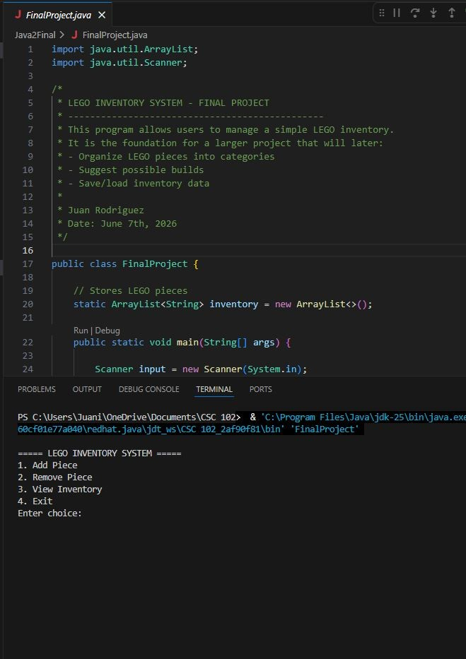
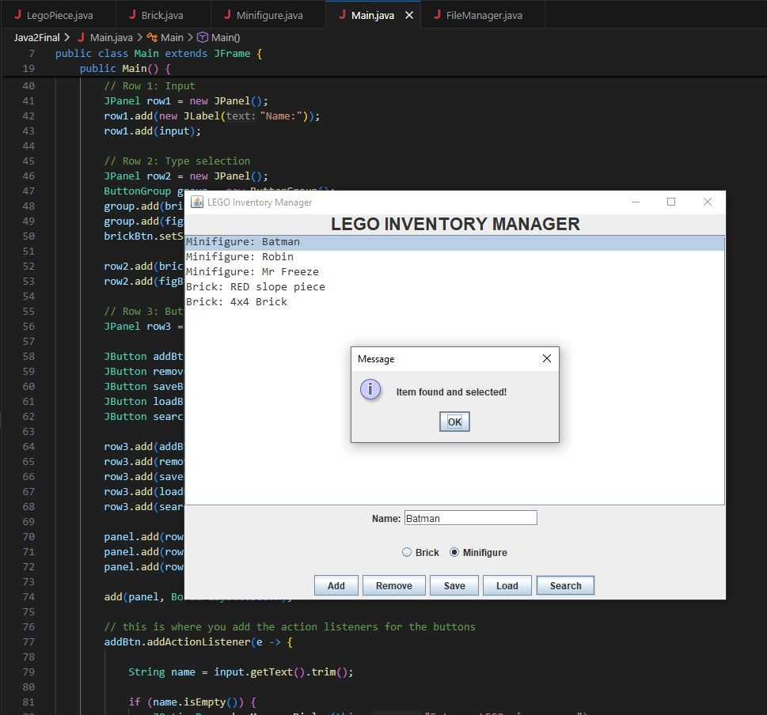
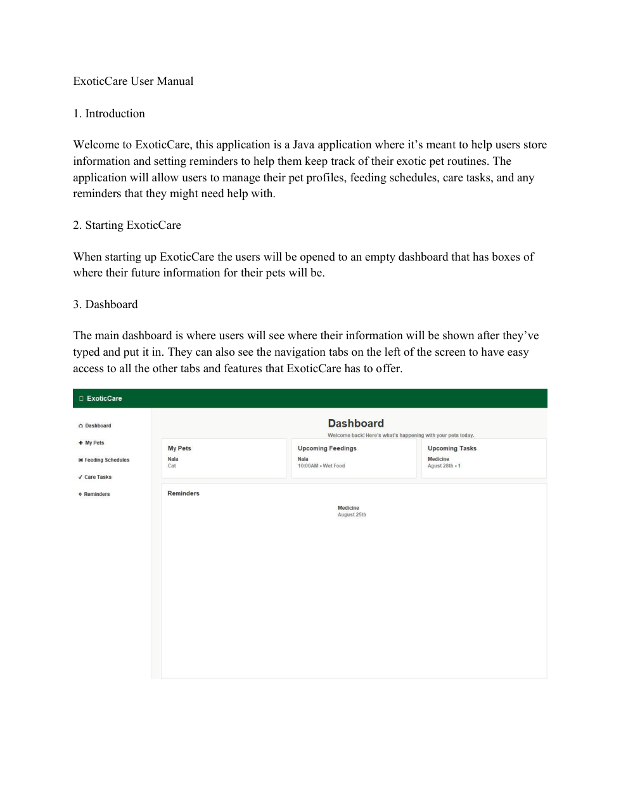
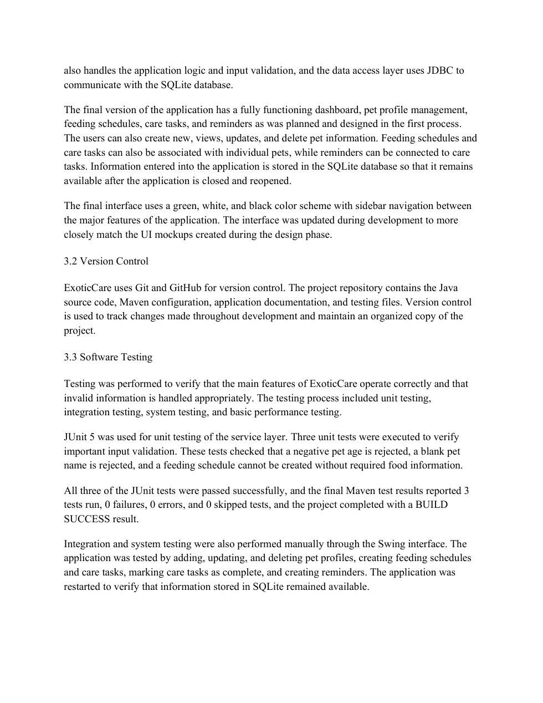
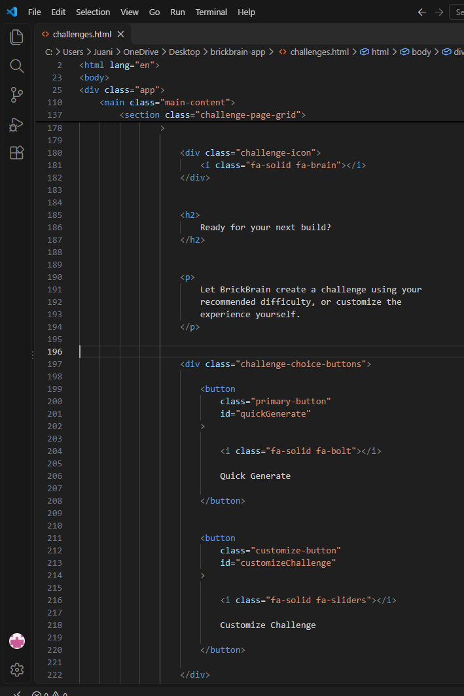
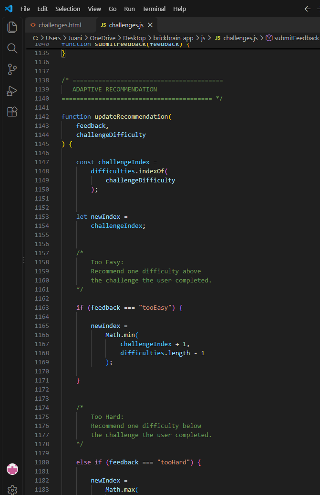

Juan Rodriguez · Portfolio of software development projects and supporting evidence
This portfolio demonstrates how my coursework and Student Innovation Project apply the objectives of the Advanced Computer Science program.
OBJECTIVE 01
Software Development Process
Follow a software development process to analyze a problem, and to design, build, and test software solutions.
Project 1 · CSC263 Java Programming II
LEGO Inventory Manager
During my Java Programming II course, I developed a simple LEGO Inventory Manager that allows users to organize and manage their LEGO collections. The main reason I wanted to create this system was because I wanted to make something useful for LEGO collectors who might have trouble keeping track of their pieces or anything in their collections.
During the development process of this project, I worked on creating a very simple user interface where users could add and remove items, search for specific pieces, and save or load their inventory later. I focused on making the application very easy to use while also learning how to implement different features using Java.
This project really helped me gather more experience with software development and gave me a very early foundation for what would eventually become my larger Student Innovation Project, BrickBrain.
While I was starting development, I first created a terminal-based version of the LEGO Inventory Manager before moving on to developing a GUI version. I used Java Swing to create the interface and later added features that allowed users to add, remove, search, save, and load LEGO pieces.
I also tested the application and the search feature to make sure it could find specific items in the inventory. As shown in my screenshot, the application successfully located and selected the Batman minifigure and displayed a confirmation message.
Project evidence

Figure 1. First checkpoint: console-based LEGO inventory menu and Java source code.

Figure 2. Finished Java Swing GUI showing a successful search for the Batman minifigure.
During my Software Engineering Principles course, I created an application called ExoticCare, which was designed to help users manage, create, and organize any information about their exotic pets, including feeding schedules, care tasks, and reminders.
During the development process of this project, I followed different stages of software development. I first planned the application and created UML diagrams to show how different parts of the system would work together. I then worked on developing the application by using Java Swing and SQLite, which allowed users to manage their pet information and save it for later use.
Most of the testing I did was by using JUnit and performing some manual testing to make sure the features all worked properly. All three of my JUnit tests passed successfully, which helped me make sure that all the important parts of the application were functioning correctly.
Overall, this project really helped me gain more experience with planning, designing, developing, and testing a complete software application. It also helped me better understand how important it is to follow an organized software development process, to make everything smoother and cleaner, especially with organizing files.
Project evidence

Figure 3. ExoticCare interface documented in the user manual.

Figure 4. Final project documentation describing unit testing and successful JUnit results.
Java was the main programming language I used to develop ExoticCare. I used Java Swing to create the graphical user interface (GUI), which allowed me to develop different interactive features for the application.
SQLite also was a big part of creating and managing the database, which allowed information entered by users to be stored and retrieved. Maven was another development tool I used to organize the project, manage dependencies, and help with the building process.
Project evidence
Figure 5. Java Swing desktop interface developed for ExoticCare.Figure 6. Project documentation showing Java unit testing results.
I used HTML, CSS, and JavaScript to develop BrickBrain as a web-based application. I used HTML to organize the structure of the website, CSS to design the layout and appearance, and JavaScript to make the different features functional and interactive.
Some of the features I developed using JavaScript include the adaptive challenge system and difficulty feedback buttons that allow users to adjust their future challenges. I also used Visual Studio Code to work on the code and GitHub Pages to publish the application online.
Project evidence

Figure 7. HTML code defining the Quick Generate and Customize Challenge buttons.

Figure 8. JavaScript logic adjusting recommended difficulty based on user feedback.
Design and implement software solutions across multiple platforms.
Next to complete: separate project explanations and evidence for ExoticCare (desktop) and BrickBrain (browser-based).
OBJECTIVE 04
Mobile or Embedded Systems
Design and implement software solutions for mobile devices or embedded systems.
Select completed projects that directly demonstrate mobile or embedded implementation; add evidence and explanations.
OBJECTIVE 05
Development Documentation
Document the planning and development of software applications using industry standard tools, techniques, and processes.
Next to complete: document how the ExoticCare SRS/UML and BrickBrain project documentation demonstrate this objective.
OBJECTIVE 06
Data Structures and Algorithms
Within software solutions, describe, implement and analyze data structure techniques such as lists, trees, hash tables, graphs, along with sorting and searching algorithms.
Identify specific implemented data structures and algorithms in completed code, then add technical explanations and evidence.